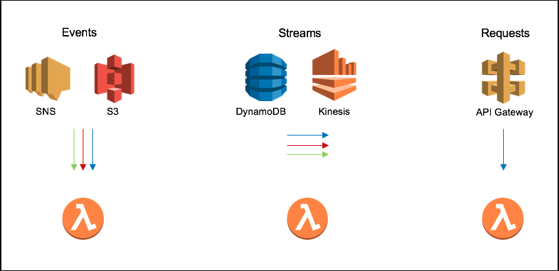
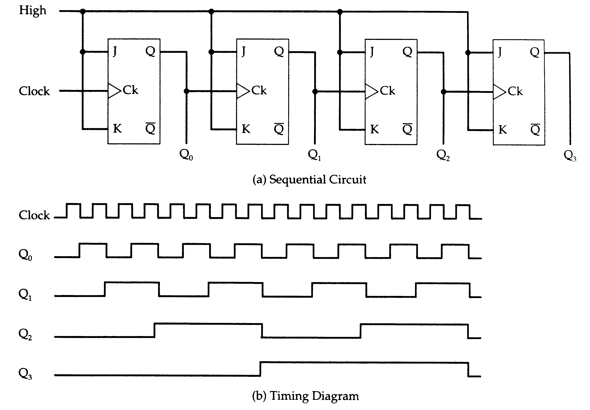
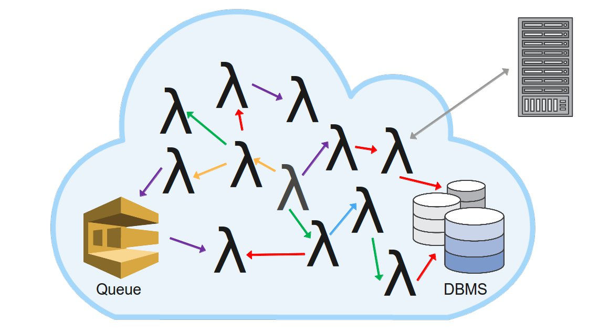
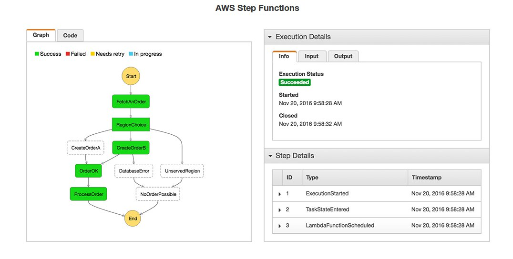
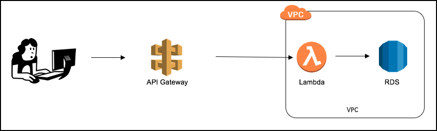
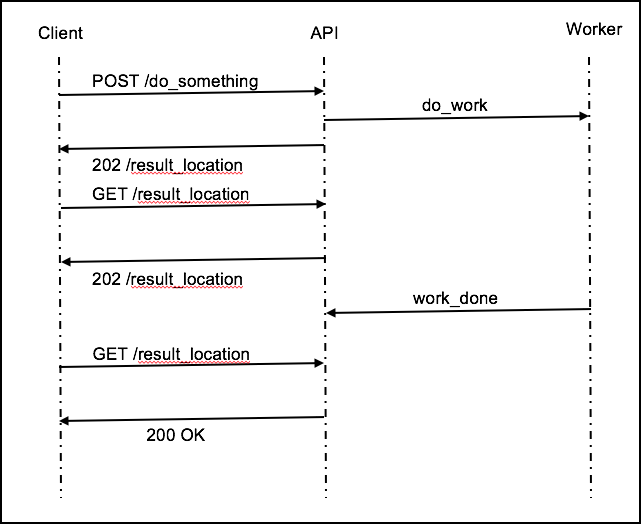

Look Ma! No servers...


Shiva Narayanaswamy / @shivamaan / Envato
Smells like Serverless
- You don’t make infrastructure choices
- How big... What size... Which subnet...
- You don’t make capacity choices
- Do I need autoscaling... How many instances do I need...
- You don’t make software choices
- Which OS... What patch level...
- You don’t pay for idle capacity
Shades of serverless
- Compute (FaaS)
- AWS Lambda, Azure Functions, Google Cloud Functions, Stdlib...
- Database
- DynamoDB, Firebase...
- Containers
- Fargate...
- Specialized SaaS Compute
- Cloudflare workers, Auth0 webtasks...
- Others
- Algorithmia...
Serverless function Execution Models
Asynchronous workflows
EVENTS AND STREAMS
Rube Goldberg architecture
Coordination
Just because you can doesn't mean you should
Make it Async
Noops Nirvana?
about
Deployments
about
Security
about
Observability
Serverless first…
a loosely held strong opinion